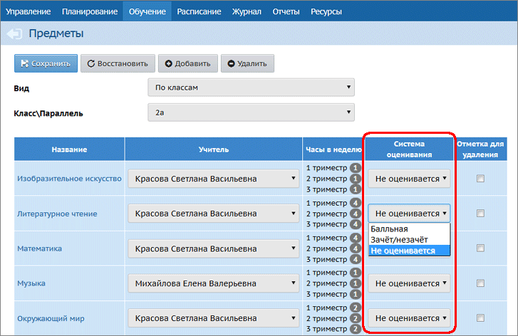

В системе «Сетевой Город. Образование» оценку «не оценивается» можно выставлять:
| · | в качестве итоговой отметки за учебный период (четверть/триместр/полугодие);
|
| · | при выставлении отметок за год – в графы «год» и «итог».
|
Рекомендуется выбирать систему "не оценивается" для 1-х и 2-х классов.
Чем отличаются виды оценок "не оценивается" и "зачёт"?
Оценка "не оценивается" позволяет указать, что ученик является успевающим, имеющим отметку, - но не является отличником. (Для сравнения, оценка "зачёт" по шкале "зачёт-незачёт" приравнивается к 5.)
Настройка системы оценивания
Задать систему оценивания – балльная, зачёт-незачёт или "не оценивается" – можно независимо для каждого предмета в каждом классе (подгруппе). Это можно сделать на экране Обучение-> Предметы, выбрав конкретный класс:

Изменить систему оценивания можно только в том случае, если в данном классе (подгруппе) по данному предмету не выставлены итоговые отметки ни за один учебный период, а также в графах «год» и «итог». Возможность изменить систему оценивания не зависит от наличия текущих отметок.
Если для данного класса (подгруппы) по данному предмету выбрана система оценивания «не оценивается», то при выставлении итоговых отметок в графе «Оценка» можно выбрать одно из следующих значений: не оценивается, далее все балльные оценки, н/а, осв. . Таким образом, для 2-го класса:
- в 1-м полугодии можно выставить "не оценивается",
- во 2-м полугодии можно выставить обычную балльную оценку.
Отчёты об успеваемости в случае системы "не оценивается"
При количественных подсчётах ученики с оценкой "не оценивается" по предмету учитываются как успевающие. Конкретно:
| · | эти ученики учитываются в общем количестве класса,
|
| · | при расчёте среднего балла оценка "н/оц" игнорируется, как будто ученик не изучает данный предмет. Например, ученик имеет три оценки: 4, 5, н/оц - средний балл равен 4.5,
|
| · | при расчёте % успеваемости эти ученики учитываются (входят и в числитель, и в знаменатель формулы),
|
| · | при расчёте % качества эти ученики учитываются только в общем кол-ве (не входят в числитель формулы, но всё равно входят в знаменатель),
|
| · | при расчёте СОУ (степень обученности учащегося) эти ученики учитываются только в общем количестве.
|
Обратите внимание: при расчёте показателей % успеваемости, % качества, СОУ получается одинаковый знаменатель: это общее количество учащихся (за вычетом не имеющих отметок и освобождённых по всем предметам).
Отдельные внутришкольные отчёты работают по следующим правилам:
| · | Сводный отчёт об успеваемости по школе: ученики с оценкой "не оценивается" попадают в графу 3 "Успевают - Всего", но не попадают в отличники, хорошисты и т.д. Также не попадают в последнюю графу "Не выставлено оценок".
|
| · | Отчёт классного руководителя за учебный период и Сводный отчёт классного руководителя: ученик с "н/оц" учитывается при подсчёте Абсолютной успеваемости;
|
| · | Итоги успеваемости класса за учебный период: ученик с "н/оц" учитывается при подсчёте % успеваемости;
|
| · | Итоги успеваемости по предмету за учебный период и Отчёт учителя-предметника: ученик с "н/оц" учитывается при подсчёте "Кол-во учащихся" и % успеваемости;
|
| · | Сводный отчёт об успеваемости и качестве обучения по школе: ученик с "н/оц" учитывается при подсчёте % успеваемости.
|